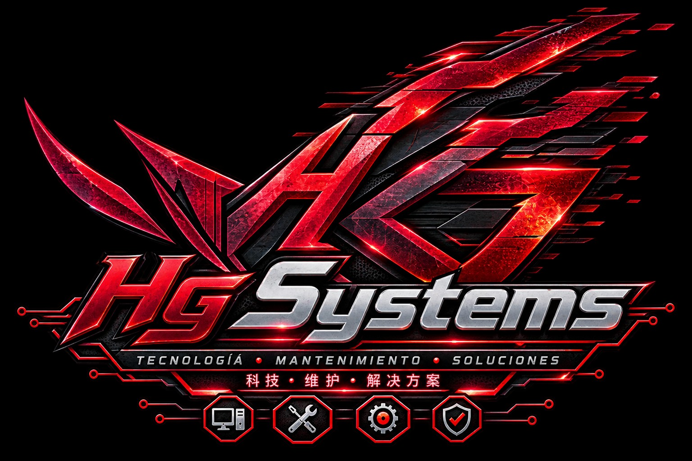
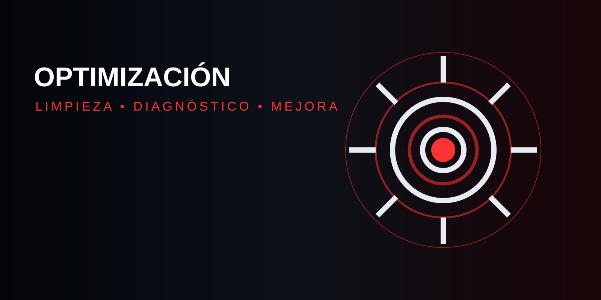
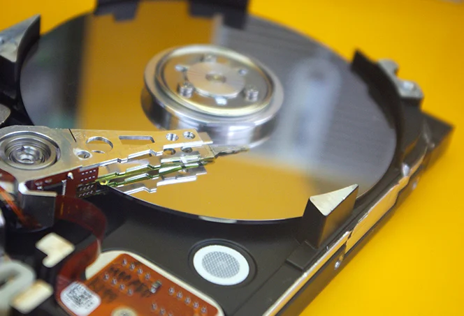

01 / MANTENIMIENTO
Devolvemos el rendimiento.
Limpieza y revisión.

HG SYSTEMS: mantenimiento y soporte para tu equipo.



Para laptops y PCs de escritorio.

Es el conjunto de acciones que se realizan periódicamente cómo limpiar, revisar y comprobar los componentes de una computadora, con el objetivo de prevenir fallas y mantener funcionando correctamente.
Desde Bs 80 →
Consiste en realizar diferentes ajustes y configuraciones para mejorar el rendimiento de la computadora, aumentar su velocidad y aprovechar mejor los recursos del sistema
Desde Bs 50 →Es el proceso de instalar, configurar y dejar funcionando correctamente programas o aplicaciones que el usuario necesita para realizar diferentes tareas en su computadora.
Desde Bs 30 →Consiste en proteger el equipo y la información almacenada mediante medidas de seguridad y copias de respaldo, evitando la pérdida de archivos importantes por errores, virus u otros problemas.
Desde Bs 40 →
Es el proceso de eliminar la información y configuraciones anteriores de un dispositivo de almacenamiento para posteriormente instalar un sistema operativo y dejar la computadora lista para su uso.
Desde Bs 100 →
Es la revisión detallada de una computadora para identificar problemas de hardware o software, determinar sus posibles causas y establecer una solución adecuada.
Desde Bs 30 →Precios referenciales. Pueden variar según el equipo.
Recibimos tu equipo.
Buscamos la causa.
Tú apruebas el costo.
Probamos y entregamos.
> iniciando diagnóstico...
> hardware [OK]
> software [OK]
> optimización [100%]
> sistema listo_
Mantenimiento informático con atención clara y accesible.
Se cobra aparte. Consulta si se descuenta.
Sí, con ambos.
Sí, siempre antes de trabajar.
Son referenciales; pueden variar.
Cuéntanos tu problema.